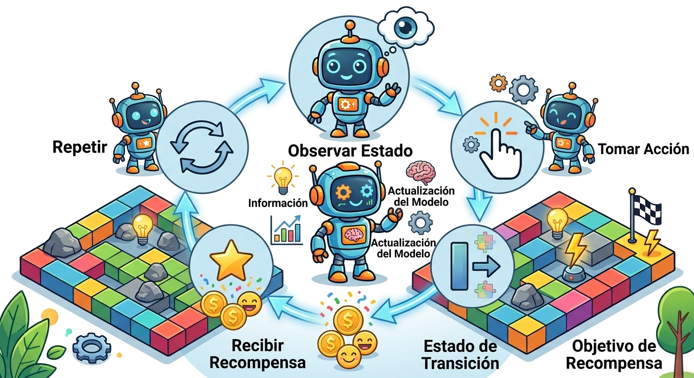

Texto
El aprendizaje por refuerzo se basa en la interacción continua entre el agente y el entorno. En cada interacción, el agente observa el estado actual, selecciona una acción y recibe una recompensa como retroalimentación. A partir de esta experiencia, ajusta progresivamente su comportamiento para mejorar sus decisiones futuras.

Para ello, emplea algoritmos como Q-Learning, que le permiten estimar qué acciones son más convenientes en cada estado. Durante este proceso, el agente debe equilibrar la exploración de nuevas alternativas con la explotación de aquellas que han demostrado obtener mejores resultados.